Everything Pomo does
From installing to the last setting. New to Pomo? Start with Install and the timer.
On this page
Install
- Download Pomo-Setup.exe. There's no need to download the source code.
- Run it. The installer is not code-signed, so Windows SmartScreen may say "Windows protected your PC". Click More info, then Run anyway.
- Choose whether you want a desktop shortcut and whether Pomo should run on startup, then click Finish.
Pomo opens as a little island at the top of your screen and says hi. Prefer a round timer you can drag anywhere? Click Switch to orb on the welcome card, or the style button on the timer whenever you like.
- Update: Pomo updates itself. It checks GitHub every hour. When a new version is out, it downloads it in the background, checks it against GitHub's checksum, and pops up Pomo 1.6.1 is available with Update now: one click and Pomo restarts on the new version, history and settings kept. During a focus session the card waits for your break, and when you're away it waits for you to come back. Unanswered, it comes back a couple of hours later; Later waits until tomorrow. With the timer hidden, you get a Windows notification instead: click it to update. On 1.4 or earlier, run the newest installer once; from 1.5 on, updates come to you. The portable zip shows a download link instead.
- Uninstall: Settings > Apps > Installed apps > Pomo. You will be asked whether to keep your history.
- No installer: download the portable zip, extract it anywhere and run
Pomo.exe. - Coming from FocusOrb? Pomo used to be called FocusOrb. Run
Pomo-Setup.exeand it removes FocusOrb for you. On its first launch, Pomo brings over your history, settings, saved API key and Claude Code connection. The old%APPDATA%\FocusOrbfolder is left in place as a backup.
What's inside
- Pomo, your focus buddyA soft matcha mochi who lives on your timer, follows your cursor and reacts to everything.
- Two timer stylesA slim island at the top of the screen (the default), or a round orb you can drag anywhere.
- Buttons right on the timerAsk Pomo, the dashboard, the timer style and settings, no right-click needed.
- Editable timeDouble-click the time and type
30,45:00or1:30:00, or scroll over it. - Pomodoro turnsDots show your place in the cycle, and 3/8 today tracks your daily goal.
- Alerts when a session endsA notification, a sound, a pop-up card with a one-tap How was that?, and a soft glow.
- Pomo helps you focusLearns your best session length, side-eyes YouTube, parks stray thoughts, and pauses when you step away.
- "Where was I?" after breaksYour task, your window, your agents' news and your parked thoughts. One click takes you back.
- Sessions named for youThe project and git branch open in your editor become the session's task.
- Focus soundsReal rain and café recordings, brown noise and a soft lo-fi loop, on a seamless loop.
- Talk to PomoHold a shortcut and ask out loud, and let a soft voice read the replies.
- Pomo on the taskbarThe countdown fills the taskbar button, with reset, play/pause and skip on hover.
- Agent-paced pomodorosTake your break while your agent works, and get its news on your break.
- Ask Pomo can act"45 minutes on the thesis, then 10 off, three rounds" sets up the plan and starts the timer.
- Breathe with PomoA short guided break: box breathing, rest your eyes, stretch.
- Daily quests and badgesThree small goals a day, a badge for each, and new outfits now and then.
- Focus gardenA sakura tree that grows with every pomodoro and unlocks new outfits.
- Pomo's roomA cozy room on the dashboard that fills up with furniture you earn.
- Global shortcutsStart, pause, skip, park a thought, play music or talk to Pomo from any app.
- Eight themes, twenty-one outfitsPick your colors and dress Pomo up, or let Pomo dress for what you're doing.
- Answer your coding agentSee its exact message, answer Claude's questions, approve requests, and reply.
- Things to play withPet Pomo, feed treats, and play Petal Catch, Mochi Stack or Memory Match.
- Music controlsSee what's playing on Spotify, YouTube or any player, and control it from Pomo.
- DashboardKPIs, charts, quests and badges, your room, agent activity, a session log and CSV export.
- Keeps an eye on your agentsClaude Code, Codex CLI and Gemini CLI: working, done, or needs you.
- Ask Pomo, with the AI you likeClaude, ChatGPT, Gemini, Grok or OpenRouter, with your own key.
Pomo runs on startup if you want it to: one switch in Settings > General.
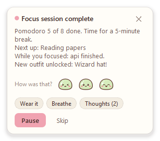
Two timer styles
The island (the default)
It hangs from the top edge of your screen.
- While a session runs, it's a small pill with a mini Pomo and the countdown.
- Hover it and it opens up with the controls, the buttons, a progress bar and what your agents are doing.
- When nothing is running, it stays put. Turn on Tuck the island away when idle in Settings > Appearance to shrink it to a thin sliver; hover the top edge of the screen to bring it back.
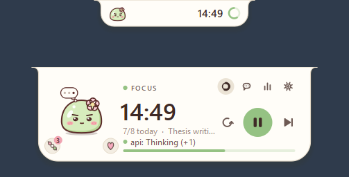
The orb
It floats in the bottom-right corner, just above the taskbar. Drag it anywhere. Hover it for the buttons: dashboard, Ask Pomo, timer style and settings along the top, and play, reset and skip below the time.
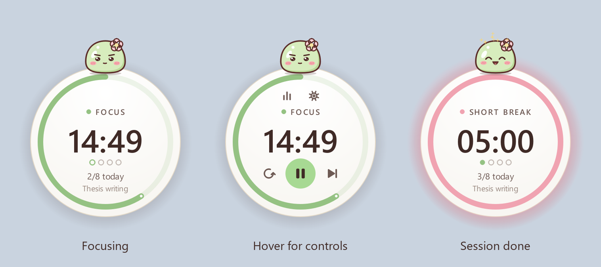
On the taskbar
Pomo also has a button on the Windows taskbar. While a session runs, the countdown fills it (green while it runs, yellow while paused), and its label counts down too. Hover it for a live picture of the timer with reset, play/pause and skip underneath. When a coding agent needs you, a small "!" appears on the button. Click it to bring the timer up.
Prefer Pomo in the tray only? Turn off Show Pomo on the taskbar in Settings > General. Close window on the button hides it until Pomo next starts.
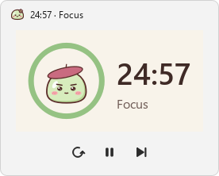
Meet Pomo
Pomo is a soft matcha mochi with a sakura blossom who sits on your timer and keeps you company.
- Pomo's eyes follow your cursor, and Pomo blinks and breathes.
- Pomo looks determined while you focus, relaxes with happy closed eyes on breaks, and sometimes does a little dance.
- Pomo bounces when the next session is ready and jumps for joy when you finish one. Reach your daily goal and there's confetti.
- Leave the timer idle for a few minutes and Pomo dozes off.
- Poke Pomo: once is fine, a few times gets you a grumpy face, and keep going for a dizzy one.
- While your coding agents work, a thought bubble appears over Pomo's head. When one needs you, it turns into a "!".
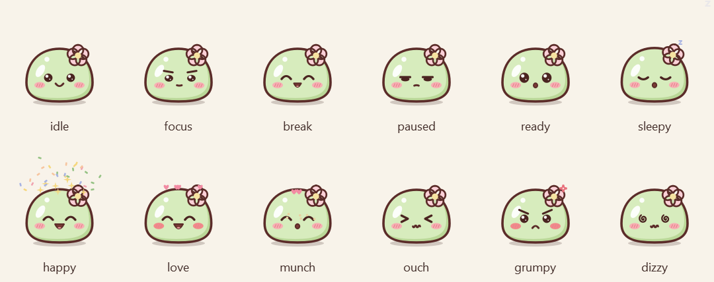
Don't want a buddy? Turn off Show Pomo in Settings > Appearance.
Play with Pomo
- Pet: rub your cursor back and forth over Pomo for hearts.
- Twirl: double-click Pomo.
- Treats: every finished focus session earns a dango (you can save up to 9). Click the dango next to Pomo to feed one.
- Games: click the petal next to Pomo (it shows on hover and during breaks), or Play a game in the right-click menu. Each keeps your best score, and during focus Pomo suggests saving it for your break.
- Petal Catch: a 30-second round. Move Pomo with your mouse or the arrow keys to catch falling sakura petals. Golden petals are worth 3.
- Mochi Stack: click (or press Space) to drop the gliding mochi onto the tower. Land it close and the tower grows; a dead-center drop is worth 2. Each one glides a little faster.
- Memory Match: sixteen cards, eight of Pomo's outfits in pairs. Clear the board in as few moves as you can.
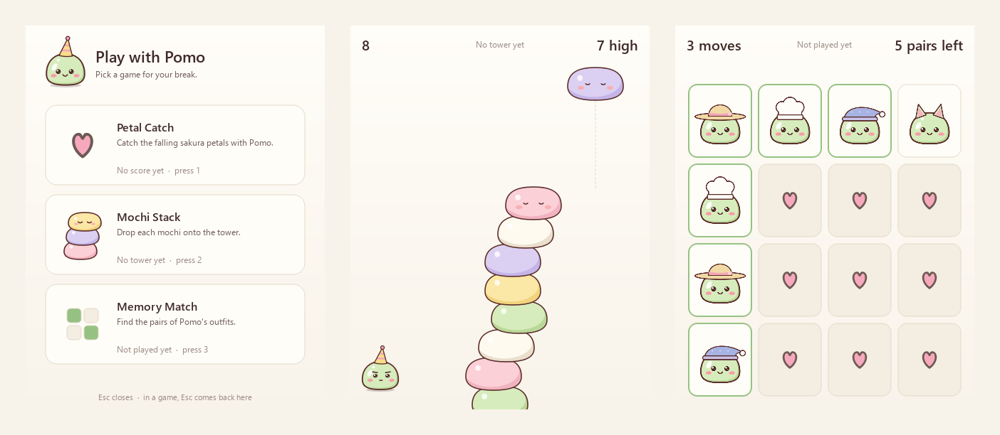
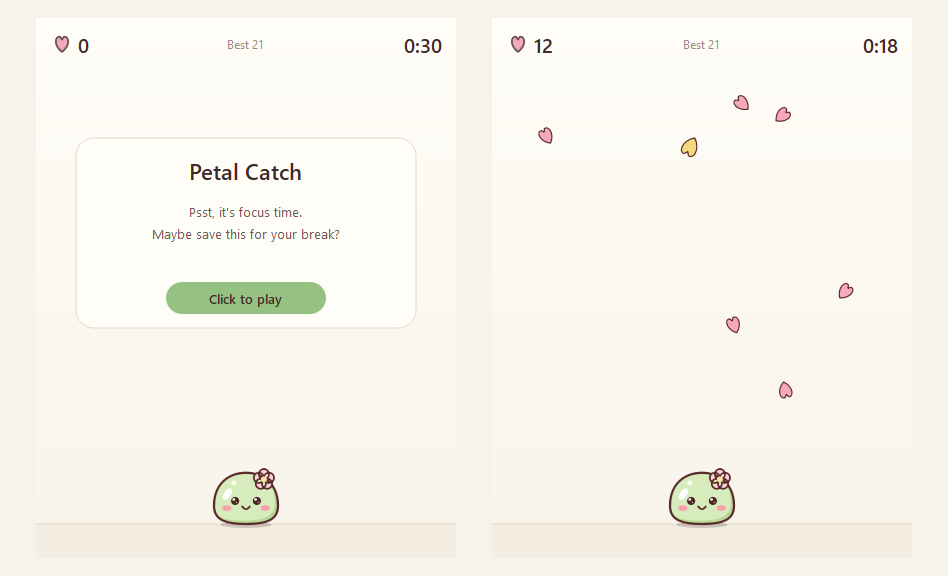
Listen along
Playing music on Spotify, YouTube in your browser, or any app in Windows' media controls? Pomo shows what's playing and lets you control it without leaving your focus.
- On the island, a now-playing row appears under the timer, with the cover, the song, and previous, play/pause and next.
- On the orb, a little music badge sits on the rim, with dancing bars while a song plays. Click it for a mini player.
- From the right-click menu, Music has the same controls.
- Pomo listens too: headphones (under any hat), a sway, and little notes floating up. A new song gets a happy bop.
- Songs left: during a focus session the music shows roughly how many songs are left until your break.
- Music follows the timer (off unless you turn it on in Settings > General): it plays while you focus and pauses on breaks.
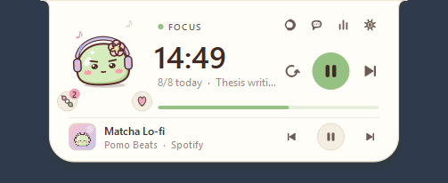
Pomo reads what's playing through Windows' own media controls, and nothing leaves your PC.
Focus sounds
No music app needed. Pick one with the headphones button beside Pomo on the island (or on the orb's rim), in Focus sounds in the right-click menu, or in Settings > General:
- Rain: a recording of steady, relaxing rain, in stereo.
- Café murmur: a recording of a café: soft chatter and the clink of cups.
- Brown noise: deep and even, to cover a noisy room.
- Lo-fi loop: a soft eight-bar loop, with a lazy beat and a little vinyl crackle.
A sound plays on a loop until you pick Off, with no gap or click where it starts over. Prefer silence on breaks? Turn on Only while I focus. Nothing is downloaded, and the sounds don't touch your system volume.
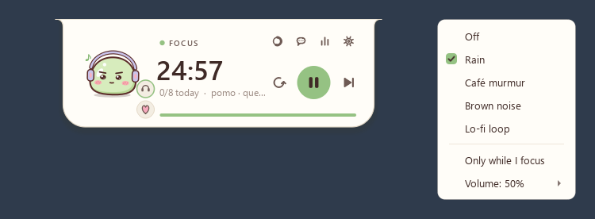
Pomo helps you focus
Learns what works for you
When a focus session ends, the card asks How was that? with three Pomo faces: tough, okay and great. After a few answers, Pomo compares your session lengths and times of day. When another length clearly suits you better, it suggests switching (at most once a week). A session you stop early counts as a tough one.
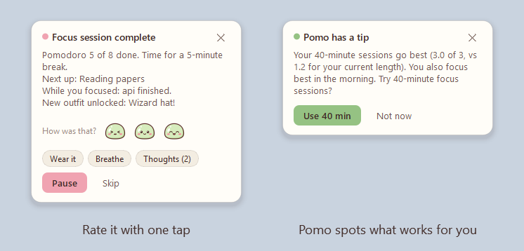
A gentle distraction check-in
Off unless you turn on Notice distracting apps and sites in Settings > Focus. Then, during a focus session, Pomo notices when something on your list (YouTube, Reddit, Netflix and so on) has been in front for 20 seconds. You get a long side-eye and a quiet Psst... YouTube? card. Nothing is blocked, and It's for work takes that one off your list. Pomo only looks at which app is in front, plus the site name in a browser's title, never at what's in the window.
Away from the PC
If the keyboard and mouse have been still for 5 minutes during a focus session, Pomo pauses it and gives that time back. When you return, choose Resume, or It was focus time if you were reading or thinking.
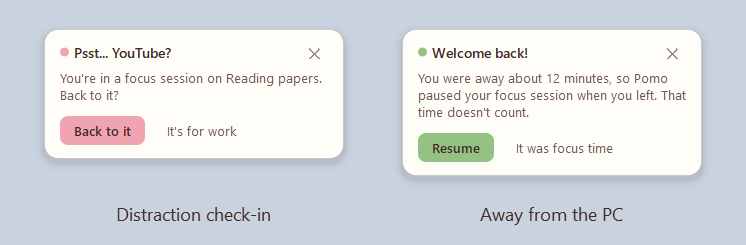
A little cheer
At halfway, with 5 minutes left and in the last minute, Pomo gives a small hop and a few warm words (Halfway through Thesis!) in a bubble beside the timer. It fades after a few seconds, makes no sound, and clicks go straight through it. Turn it off with During focus in Settings > Focus.
Where was I?
When a break ends, the card tells you where you left off: your task, the window you were working in (say, VS Code · pomo), what your coding agents did while you were away, your parked thoughts, and a review your agent left you. Back to VS Code starts your session and brings that window back to the front in one click.
Sessions named after your project
Start a focus session without a task and Pomo looks at the editor you were just in: the project open there and its git branch. It asks Working on pomo?, and one click names the session pomo (or pomo · fix-login away from the main branch). It works with VS Code and editors built on it (Cursor, Windsurf, VSCodium...), JetBrains IDEs, Visual Studio, Sublime Text and terminals. Window titles stay in memory: Pomo never writes them down.
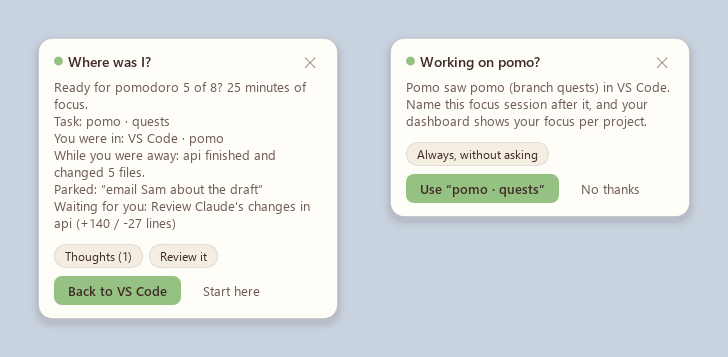
Park a thought
Something pops into your head mid-focus? Press Ctrl+Alt+Shift+N from any app, type it and press Enter, and you're back to work. Parked thoughts wait on the break card and in Parked thoughts in the right-click menu, where you can tick them off or have Ask Pomo turn them into a plan.
Breathe with Pomo
When a break starts, the card offers Breathe: about a minute and a half of four rounds of box breathing while Pomo inflates and deflates, 20 seconds to rest your eyes on something far away, and a stretch.
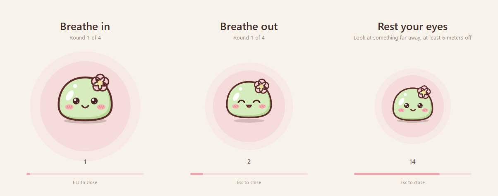
Quiet focus
During a focus session, Pomo holds its own alerts that can wait, like an agent finishing, and shows them together when your break starts. Permission requests still come through right away. Windows doesn't let apps switch on its own Do not disturb, so this only keeps Pomo quiet.
Global shortcuts
| Shortcut | Does |
|---|---|
| Ctrl+Alt+Shift+P | Start or pause the timer |
| Ctrl+Alt+Shift+K | Skip to the next session |
| Ctrl+Alt+Shift+N | Park a thought |
| Ctrl+Alt+Shift+M | Play or pause music |
| Ctrl+Alt+Shift+H | Show or hide the timer |
| Ctrl+Alt+Shift+Space (hold) | Talk to Pomo: speak while you hold it, let go to ask |
They work from any app. Change or turn them off in Settings > Shortcuts.
Garden, quests and Pomo's room
Focus garden
Every finished pomodoro grows a sakura tree on your dashboard, from a sprout to a grand sakura over your first 250 pomodoros, with one blossom for each pomodoro in the range you're viewing. Milestones unlock outfits: cat ears at 10 pomodoros, a flower crown at 25, a graduation cap at 50 and a wizard hat at 100.
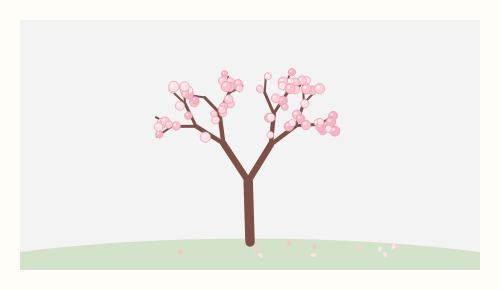
Daily quests and badges
Each morning Pomo picks three small quests, from the ones that fit how you use it (no agent quests if you don't use coding agents, no early-bird quest after 9). For example:
| Quest | Goal |
|---|---|
| Early bird | Finish 2 pomodoros before 10 AM |
| Laser focus | Finish a whole session with no pauses or distractions |
| Hat trick | Finish 3 pomodoros in a row, none stopped early |
| Deep dive | Finish a focus session of 45 minutes or more |
| Parking pro | Park 2 stray thoughts instead of chasing them |
| Playtime | Play a mini game on a break |
| Code reviewer | Finish a focus session reviewing your agent's changes |
| Perfect timing | Take a break while a coding agent works |
There are thirteen in all. Each one earns its badge (badges count up when you earn them again), and finishing all three in a day earns Perfect day. Quests also unlock outfits: a star clip at 5 quests, bunny ears at 15 and a strawberry hat at 30. Turn them off in Settings > Focus.
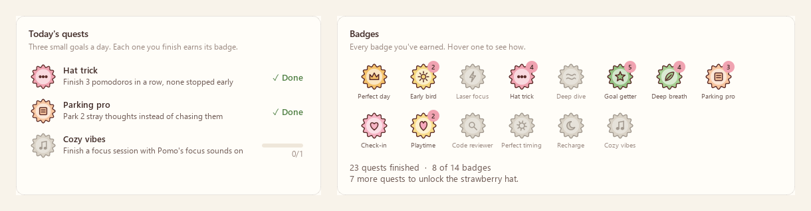
Pomo's room
Pomo has a room on the dashboard. It starts with a cushion and a rug under a window, and fills up as you go.
| Earned with | Items (and what it takes) |
|---|---|
| Focus hours | Succulent (1), Little desk (3), Wall clock (5), String lights (10), Bookshelf (15), Monstera (25), Sakura curtains (35), Bean bag (50), Floor lamp (70), Study desk (100), Sakura bonsai (150), Cloud sofa (200) |
| Daily quests | Sakura print (3), Heart rug (10), Trophy shelf (20), Fish bowl (40) |
| Perfect days | Starry curtains (3), Sleepy cat (7) |
A new item moves straight in, and the card at the end of your session says so (See room takes you there). Click any spot in the room to swap what's there for something else you've earned, or leave it empty, and click Pomo to poke him. The window goes from sunrise to stars, the lights and lamps glow in the evening, Pomo dozes off late at night, the wall clock shows the real time, and the trophy shelf shows your top badges.
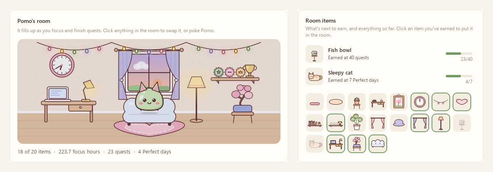
Themes and outfits
Pick a theme in Settings > Appearance or from the right-click menu: Matcha (the default), Sakura, Lavender, Peach and Mint are light; Cocoa, Blueberry and Plum are dark.
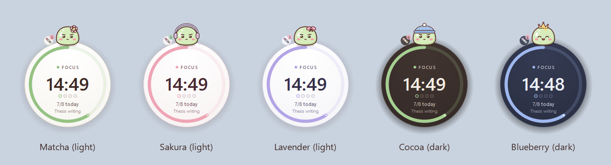
Pomo has twenty-one outfits. Four are earned in the focus garden and three with daily quests. Choose one under Pomo's outfit in Settings > Appearance or in the right-click menu.
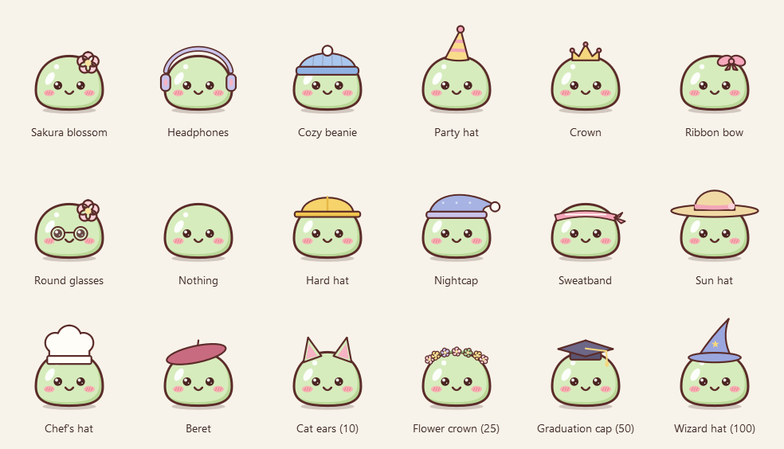
Pomo dresses for what you're doing: a sweatband while you focus, a sun hat on breaks, a hard hat while your agents work, headphones when music plays, a beret in Ask Pomo, glasses on the dashboard, a party hat in Petal Catch and a nightcap when the timer's been idle. Your own pick shows the rest of the time. Turn it off in Settings > Appearance.
Keep an eye on your coding agents
Pomo can watch your Claude Code, Codex CLI and Gemini CLI sessions, so you can stay in your focus session and still know when an agent needs you.
Connect it once: open Settings > Agents and click Connect Claude Code. Pomo adds its hooks to %USERPROFILE%\.claude\settings.json. Your other settings are kept, and a backup is saved next to the file the first time.
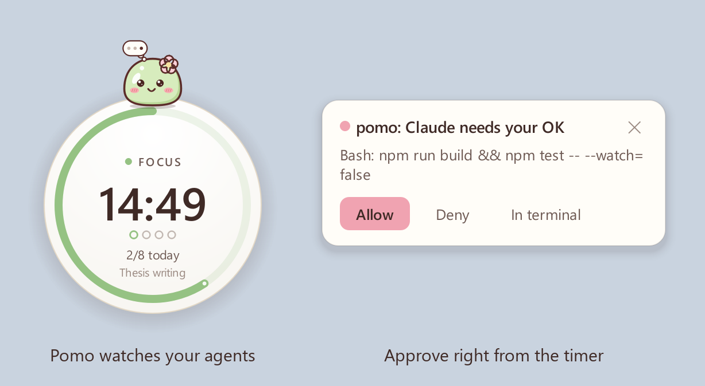
- Live status. Pomo's thought bubble while an agent works, and each session's project and activity on the island and in the right-click menu.
- Approvals from Pomo. A card shows the project and the exact command or file, with Allow, Deny and In terminal. If you don't answer within 60 seconds, the agent asks in the terminal as usual. Nothing is ever approved without your click.
- Heads-up when it's done. A notification when an agent finishes a long task or waits for your input.
- Today's activity on the dashboard: sessions, prompts, tool calls, files edited, commands and approvals.
Codex CLI and Gemini CLI
- Codex CLI: Pomo adds its hooks to
%USERPROFILE%\.codex\hooks.json. Run/hooksin Codex once and trust Pomo's. You get live status, approvals (Allow, Deny, Deny with a note), changes to review, and replies when a turn ends. - Gemini CLI: Pomo adds its hooks to
%USERPROFILE%\.gemini\settings.json(needs a Gemini CLI with hooks). You get live status, changes to review, a heads-up when it waits for permission, and replies when a turn ends.
Answer Claude from Pomo
When you're away from your terminal, Claude Code's messages come to Pomo word for word: its multiple-choice questions with every option, its final message when a turn ends (type a reply and Claude picks it up as your next instruction), and permission prompts with Deny with a note. At your terminal, nothing waits.
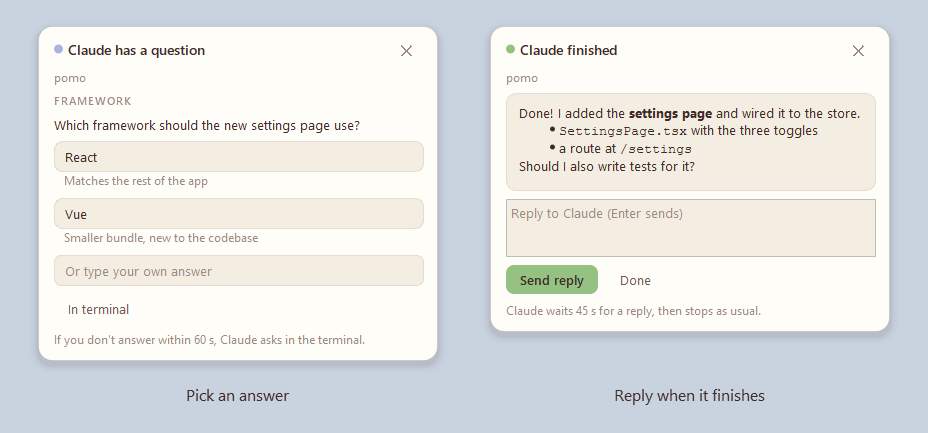
Review your agents' changes
When an agent finishes a turn that changed files, the finish notice offers them as focus work: It changed 4 files (+138 / -26 lines). Review them in your next focus session? Reviews you leave for later wait in Reviews waiting, on the dashboard and on the "Where was I?" card, and leave the list once you've focused on them.
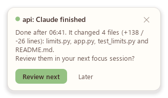
Agent-paced pomodoros
- Break while it works. When Claude has been on a long task and you're well into a focus session, Pomo offers your break now.
- Focus while you wait. When Claude starts a long task and your timer is idle, Pomo suggests a focus session of your own.
- News on your break. Finished and waiting notices are held during focus and shown on your break card.
- Back to focus. When Claude finishes during your break, the notice offers your next focus session.
Watching never slows your agent down, and if Pomo isn't running, your agent behaves exactly as before. Agent events stay on your PC, over a local named pipe that only your Windows account can open. Disconnect removes only Pomo's own entries.
Ask Pomo
Click the chat button on the timer to chat with Pomo. It knows your timer, focus stats, current task and what your agents did today. The chips give you a head start: Plan my task, My week, My day, Agents today and Pep talk.
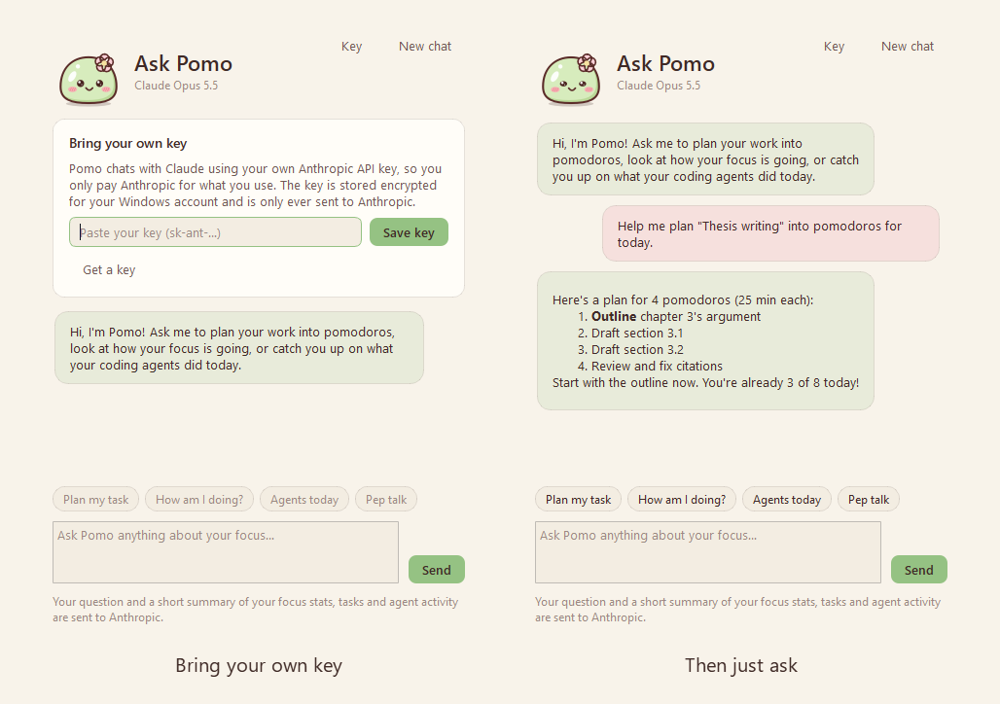
Ask Pomo can do it for you. It can start a focus session or a break, set your task, line up a plan of tasks, and change your session lengths. From 6 PM it also offers a short review of your day, and only asks the AI if you say yes.
Pick your AI, bring your own key
| Provider | Models to start with | Key from |
|---|---|---|
| Anthropic (Claude), the default | Claude Opus 5.5, Sonnet 5.5, Haiku 5.5, Fable 5.1, Opus 5 | console.anthropic.com |
| OpenAI (ChatGPT) | GPT-5.4, GPT-5.4 mini, GPT-5.4 nano | platform.openai.com |
| Google Gemini | Gemini 3.5 Flash, Gemini 3.1 Pro (preview), Gemini Flash (latest) | aistudio.google.com |
| xAI (Grok) | Grok 4.6, Grok 4.3 | console.x.ai |
| OpenRouter | Auto, plus hundreds of models behind one key | openrouter.ai |
There's no subscription: you pay the provider directly. Pomo checks your key with a free call, stores it encrypted for your Windows account, and only ever sends it to that provider. Load models in Settings > AI shows every model your key can use. Nothing is sent until you ask something; then Pomo sends your question plus a short summary of your timer, focus stats, tasks, plan and agent activity.
Talk to Pomo
Hold Ctrl+Alt+Shift+Space from any app, say your question, and let go, or hold the mic button in Ask Pomo. Turn on the speaker and Pomo reads its answers in a soft Windows voice.
| Who hears you | How | Your voice goes to |
|---|---|---|
| This PC | Windows' own speech recognition, offline | Nowhere: it stays on your PC |
| OpenAI | OpenAI's transcription, with your OpenAI key | OpenAI |
| Gemini | A Gemini model, with your Gemini key | |
| Automatic (the default) | OpenAI or Gemini when Ask Pomo uses it, this PC otherwise | As above |
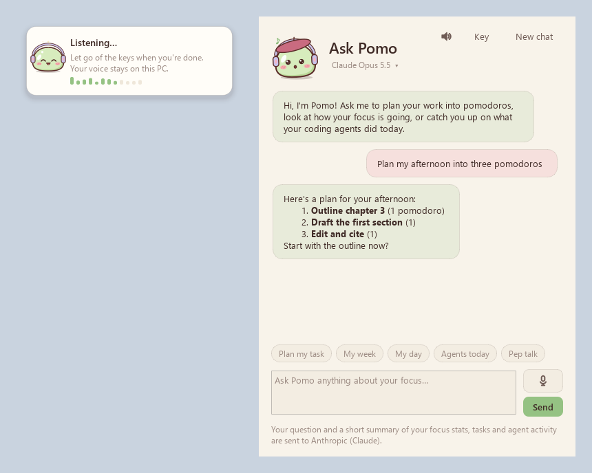
Using the timer
| Action | How |
|---|---|
| Start / pause | Hover, then click the round play button, or press Space |
| Reset / skip | The buttons next to play, or R / S |
| Edit the time | Double-click the time and type a value. Idle, whole minutes become the new default; running, it changes the time left. |
| Nudge the time | Scroll over the timer: 1 min per notch (Shift or Ctrl: 5 min), or Up / Down |
| Buttons | Dashboard, Ask Pomo, timer style and settings along the top of the timer (hover to see them) |
| Move it | Drag the orb anywhere. The island stays at the top center. |
| Play | Poke, pet or double-click Pomo; click the dango to feed a treat or the petal for the games |
| Music and sounds | The now-playing row or music badge; the headphones button beside Pomo for focus sounds |
| Taskbar | Hover Pomo's taskbar button for reset, play/pause and skip |
| Everything else | Right-click: switch mode, add time, set task, your plan, parked thoughts, daily goal, timer style, theme, outfit, Pomo's room, Ask Pomo, games, Breathe, focus sounds, quests, music, reviews, coding agents, run on startup, hide, quit |
| Tray icon | Click to bring the timer back; double-click for the dashboard |
Dashboard
Open it with the chart button on the timer, from the right-click menu or by double-clicking the tray icon.
- Today and KPIs: focus time, pomodoros against your goal, change from the previous period, completion rate, streaks, peak hour, best day and break time.
- Charts: daily focus with a goal line, a consistency heatmap, top tasks, time of day and weekday rhythm.
- Garden and insights: your sakura tree, your best focus length, how sessions felt, your focus score and where your focus time went.
- Quests, badges and Pomo's room: today's quests, every badge, the room you're furnishing and what's next to earn.
- Coding agents: today's activity, how agent work overlapped with your focus and breaks, and changes waiting for review.
- Session log with CSV export, and a range of 7 days, 30 days, 90 days or all time.
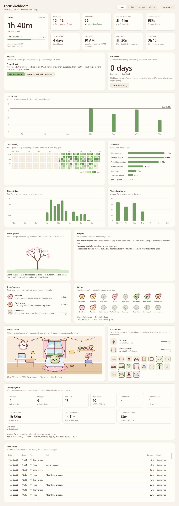
Settings
| Tab | What you can change |
|---|---|
| Timer | Focus, short and long break lengths; long break interval; daily goal; auto-start |
| Focus | Session ratings, cheering, away detection, the distraction check-in, quiet focus, the break card, "Where was I?", naming sessions after your project, daily quests |
| Alerts | Notifications, pop-up card, sound, volume, repeats, idle reminder |
| Appearance | Theme, timer style, show Pomo, outfit, dressing for what you're doing, tucking the island away, orb size, opacity, always on top, colors |
| Agents | Connect Claude Code, Codex CLI and Gemini CLI; reviews; approvals and wait times; finish notifications; answering questions; replies; break suggestions |
| AI | Provider, model and keys for Ask Pomo; the day review; who hears you when you talk; reading replies aloud and the voice |
| Shortcuts | Global shortcuts on or off, and each key combination |
| General | Run on startup, updates, the taskbar button, focus sounds, music controls, the data folder, CSV export, clear history |
Your data
Everything lives in %APPDATA%\Pomo: your settings (with quests, badges and your room), your history (sessions, ratings, agent activity, parked thoughts), the prepared focus sounds, a downloaded update until it's installed, and your API keys, encrypted. Window titles are never written to disk, and voice recordings only pass through a temporary file that's deleted right away. To check for updates, Pomo asks GitHub's public API every hour; nothing about you is sent with it.
For developers
Run from source
.\run.batThe first run creates a .venv and installs the dependencies (PySide6 and the Anthropic SDK). .\run.bat --demo fills the dashboard with sample history in a separate data folder. Run the tests with python -m unittest discover -s tests -t ., and python main.py --media-check shows what Pomo sees playing.
Build the installer
Install Inno Setup 6 (winget install JRSoftware.InnoSetup), then run .\build.bat. It runs the tests, then writes dist\Pomo-Setup.exe and dist\Pomo-portable.zip.
Publish a release
- Bump
APP_VERSIONinpomodoro/__init__.pyand commit. - Tag and push the tag:
git tag v1.7.0, thengit push origin v1.7.0. - GitHub Actions builds the installer, the portable zip and
Pomo-Setup.exe.sha256. Installed copies find the release within an hour, verify it and offer the one-click update.
Project layout
main.py entry point, single-instance guard, hook mode, FocusOrb data migration
pomodoro/engine.py timer state machine (monotonic clock, cycles, logging)
pomodoro/island.py the top-of-screen island (the default timer style)
pomodoro/orb.py the floating round timer
pomodoro/pomo.py Pomo: drawing, moods, outfits and animation (all in code)
pomodoro/game.py the games window and Petal Catch
pomodoro/stack.py Mochi Stack
pomodoro/memory.py Memory Match
pomodoro/toast.py pop-up cards (session alerts, welcome, agent approvals)
pomodoro/agents.py live coding-agent sessions and approvals, over a local named pipe
pomodoro/hook.py the hook client the agents run
pomodoro/claude_hooks.py connects / disconnects Pomo in Claude Code's settings.json
pomodoro/agent_hooks.py connects / disconnects Pomo in Codex CLI and Gemini CLI
pomodoro/reviews.py the agent review queue
pomodoro/workspace.py the window you worked in, and your editor's project and branch
pomodoro/quests.py daily quests, badges and their drawings
pomodoro/cheer.py a few warm words from Pomo during focus
pomodoro/soundscapes.py focus sounds: seamless loops, brown noise and lo-fi
pomodoro/sounds/ the rain and café recordings (MP3)
pomodoro/audio.py sound in and out through Windows' waveOut and waveIn, MP3 decoding
pomodoro/voice.py Talk to Pomo: push-to-talk, speech to text, replies read aloud
pomodoro/taskbar.py the taskbar button: progress, thumbnail buttons, live preview
pomodoro/updater.py updates from GitHub Releases: check, download, verify, install
pomodoro/ai.py Ask Pomo: context, streaming replies and key checks
pomodoro/providers.py the AI providers and their models
pomodoro/agent_card.py Claude Code's questions, prompts and messages, answered in Pomo
pomodoro/chat.py the Ask Pomo window, with the bring-your-own-key panel
pomodoro/keystore.py API key storage, encrypted with Windows DPAPI
pomodoro/media.py now playing: Windows' media sessions (WinRT)
pomodoro/pacing.py agent-paced pomodoros
pomodoro/presence.py away detection and the distraction check-in
pomodoro/insights.py best focus length, focus score, agent overlap, songs left
pomodoro/planner.py the task plan and Ask Pomo's tools
pomodoro/thoughts.py the thought parking lot
pomodoro/breathe.py Breathe with Pomo
pomodoro/garden.py the focus garden and outfit unlocks
pomodoro/room.py Pomo's room: the items, what earns them, and their drawings
pomodoro/hotkeys.py global shortcuts (Win32 RegisterHotKey)
pomodoro/music_card.py the mini player card
pomodoro/dashboard.py dashboard window
pomodoro/charts.py hand-painted charts
pomodoro/settings_dialog.py settings window
pomodoro/app.py controller: tray, menus, notifications, wiring
pomodoro/config.py settings, outfits and the FocusOrb to Pomo data move
pomodoro/storage.py SQLite history (pomodoros and agent events)
pomodoro/stats.py KPI calculations
pomodoro/sounds.py alert sounds synthesized at runtime
pomodoro/theme.py the eight pastel themes, stylesheet
pomodoro/icons.py button glyphs and the Pomo app icon
pomodoro/winutil.py Windows helpers
installer/Pomo.iss Inno Setup installer script
tools/prepare_build.py the .exe icon, installer artwork and version info
tests/ unit tests